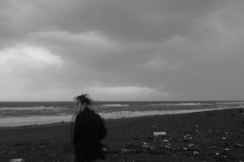

about
JA
石原遼太郎（2001年生まれ）は、東京/神奈川を拠点に活動する作曲家・音響芸術家。アクースマティック音楽、即興演奏を交えたコンポジション、サウンド・インスタレーション、アルゴリズミックな実践を横断しながら、楽曲がもつ領界の孔としての「窓」、場所と記憶とその話者、ドキュメンタリーとフィクションのあわいを探究している。2024年、東海大学教養学部芸術学科音楽学課程卒業。
作品は国内外で発表されている。フランスでは、ナタナエル・ラボワソンの企画によるアクースモニウム・コンサート（ロマンヴィル）や、リヨン国立高等音楽・舞踊院（ヴィルールバンヌ）で作品が上演された。日本では2022年以降、東京芸術劇場のボンクリ・フェスティバルに継続的に参加し、《尾鉱》や《伊桑浦》などのアクースマティック作品を発表している。2024年にはアルバム《尾鉱》をリリース。映画音楽家としては、監督・満粋（高橋昂大）の作品に音楽で参加しており、《A Veil》(2023) や《流木の塔》(2026) などがある。
EN
Ryotaro Ishihara (b. 2001, Japan) is a composer and sound artist based in Tokyo and Kanagawa, Japan. Working across acousmatic music, composition incorporating improvisation, sound installation, and algorithmic practice, his work explores the "window" as an aperture in a work's bounded domain, site and memory and their narrator, and the spaces between documentary and fiction. He graduated from the Course of Music, Department of Arts, School of Humanities and Culture, Tokai University, in 2024.
His works have been presented in Japan and internationally. In France, his pieces have been performed at acousmonium concerts organized by Nathanaëlle Raboisson in Romainville, and at the Conservatoire national supérieur de musique et de danse in Villeurbanne. In Japan, he has performed regularly at Born Creative Festival (Tokyo Metropolitan Theatre) since 2022, presenting acousmatic works including Bikō and Isōura. In 2024, he released the album Bikō. As a film composer, he has contributed music to works by director Mansui (Kodai Takahashi), including A Veil (2023) and Tower of Driftwood (2026).
contact: works.caas@gmail.com